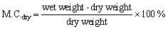
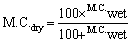
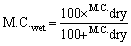

2.4.1 Need for selection of the right gasifier for each fuel
2.4.2 Energy content of the fuel
2.4.3 Moisture content of the fuel
2.4.4 Volatile matter content of the fuel
2.4.5 Ash content and ash chemical composition
2.4.6 Reactivity of the fuel
2.4.7 Particle size and size distribution
2.4.8 Bulk density of the fuel
2.4.9 Charring properties of the fuel
2.4.10 Assessment of the suitability of various types of biomass as gasifier fuel
Biomass fuels available for gasification include charcoal, wood and wood waste (branches, twigs, roots, bark, woodshavings and sawdust) as well as a multitude of agricultural residues (maize cobs, coconut shells, coconut husks, cereal straws, rice husks, etc.) and peat.
Because those fuels differ greatly in their chemical, physical and morphological properties, they make different demands on the method of gasification and consequently require different reactor designs or even gasification technologies. It is for this reason that, during a century of gasification experience, a large number of different gasifiers has been developed and marketed, all types geared towards handling the specific properties of a typical fuel or range of fuels.
Thus it follows that the "universal" gasifier, able to handle all or most fuels or fuel types, does not exist, and in all probability will not exist in the foreseeable future.
The range of designs includes updraught, downdraught, crossdraught, fluidized bed as well as other biomass gasification systems of less importance (see section 2.3). All systems show relative advantages and disadvantages with respect to fuel type, application and simplicity of operation, and for this reason each will have its own technical and/or economic advantages in a particular set of circumstances.
Each type of gasifier will operate satisfactorily with respect to stability, gas quality, efficiency and pressure losses only within certain ranges of the fuel properties of which the most important are:
- energy content
- moisture content
- volatile matter
- ash content and ash chemical composition
- reactivity
- size and size distribution
- bulk density
- charring properties
Before choosing a gasifier for any individual fuel it is important to ensure that the fuel meets the requirements of the gasifier or that it can be treated to meet these requirements. Practical tests are needed if the fuel has not previously been successfully gasified.
In the next sections the most important fuel properties will be discussed and fuels of current interest will be reviewed.
The choice of a fuel for gasification will in part be decided by its heating value. The method of measurement of the fuel energy content will influence the estimate of efficiency of a given gasification system. Reporting of fuel heating values is often confusing since at least three different bases are used:
- fuel higher heating values as obtained in an adiabatic bomb calorimeter. These values include the heat of condensation of the water that is produced during combustion. Because it is very difficult to recover the heat of condensation in actual gasification operations these values present a too optimistic view of the fuel energy content;- fuel higher heating values on a moisture-free basis, which disregard the actual moisture content of the fuel and so provide even more optimistic estimates of energy content;
- fuel higher heating values on a moisture and ash free basis, which disregard the incombustible components and consequently provide estimates of energy content too high for a given weight of fuel, especially in the case of some agricultural residues (rice husks).
The only realistic way therefore of presenting fuel heating values for gasification purposes is to give lower heating values (excluding the heat of condensation of the water produced) on an ash inclusive basis and with specific reference to the actual moisture content of the fuel. Average lower heating values of wood, charcoal and peat are given in Table 2.4.
Table 2.4 Average lower heating values
|
Fuel |
Moisture content (%) 1/ |
Lower heating value (kJ/kg) |
|
wood |
20 - 25 |
13 - 15000 |
|
charcoal |
2 - 7 |
29 - 30000 |
|
peat |
35 - 50 |
12 - 14000 |
1/ per cent of dry weight
The heating value of the gas produced by any type of gasifier depends at least in part on the moisture content of the feedstock.
Moisture content can be determined on a dry basis as well as on a wet basis. In this chapter the moisture content (M.C.) on a dry basis will be used.
Moisture content is defined as:

Alternatively the moisture content on a wet basis is defined as:
Conversions from one to another can be obtained by:

and:

High moisture contents reduce the thermal efficiency since heat is used to drive off the water and consequently this energy is not available for the reduction reactions and for converting thermal energy into chemical bound energy in the gas. Therefore high moisture contents result in low gas heating values.
When the gas is used for direct combustion purposes, low heating values can be tolerated and the use of feedstocks with moisture contents (dry basis) of up to 40 - 50 percent is feasible, especially when using updraught gasifiers.
In downdraught gasifiers high moisture contents give rise not only to low gas heating values, but also to low temperatures in the oxidation zone, and this can lead to insufficient tar converting capability if the gas is used for engine applications.
Both because of the gas heating value (engines need gas of at least 4200 kJ/m³ in order to maintain a reasonable efficiency) and of the tar entrainment problem, downdraught gasifiers need reasonably dry fuels (less than 25 percent moisture dry basis).
The amount of volatiles in the feedstock determines the necessity of special measures (either in design of the gasifier or in the layout of the gas cleanup train) in order to remove tars from the product gas in engine applications.
In practice the only biomass fuel that does not need this special attention is good-quality charcoal.
The volatile matter content in charcoal however is often underestimated and in practice may be anything from 3 to 30 percent or more. As a general rule if the fuel contains more than 10 percent volatile matter it should be used in downdraught gas producers, but even in this case the method of charcoal production should be taken into account. Charcoal produced in large scale retorts is fairly consistent in volatile matter content, but large differences can be observed in charcoal produced from small scale open pits or portable metal kilos that are common in most developing countries.
Ashes can cause a variety of problems particularly in up or downdraught gasifiers. Slagging or clinker formation in the reactor, caused by melting and agglomeration of ashes, at the best will greatly add to the amount of labour required to operate the gasifier If no special measures are taken, slagging can lead to excessive tar formation and/or complete blocking of the reactor. A worst case is the possibility of air-channelling which can lead to a risk of explosion, especially in updraught gasifiers.
Whether or not slagging occurs depends on the ash content of the fuel, the melting characteristics of the ash, and the temperature pattern in the gasifier. Local high temperatures in voids in the fuel bed in the oxidation zone, caused by bridging in the bed, may cause slagging even using fuels with a high ash melting temperature.
In general, no slagging is observed with fuels having ash contents below 5-6 percent. Severe slagging can be expected for fuels having ash contents of 12 percent and above. For fuels with ash contents between 6 and 12 percent, the slagging behaviour depends to a large extent on the ash melting temperature, which is influenced by the presence of trace elements giving rise to the formation of low melting point eutectic mixtures.
For gasification purposes the melting behaviour of the fuel ash should be determined in both oxidating and reducing atmospheres.
As far as ash content is concerned, raw wood and wood charcoals seldom present problems, the ash content being normally from 0.75 to 2.5 percent. However, in a number of tropical woods (22) charcoal ash contents may be much higher and those charcoal types are unsuitable for gasification purposes. Table 2.5 lists agricultural residues which have been tested with respect to their slagging properties in a small downdraught laboratory gas producer (19).
Up and downdraught gasifiers are able to operate with slagging fuels if specially modified (continuously moving grates and/or external pyrolysis gas combustion). Cross draught gasifiers, which work at very high temperatures of 1500° C and above, need special safeguards with respect to the ash content of the fuel. Fluidized bed reactors, because of their inherent capacity to control the operating temperature, suffer less from ash melting and fusion problems.
Table 2.5 Slagging of agricultural residues in a small laboratory down draught gasifier (Jenkins, (19))
|
Slagging fuels |
Ash content percent |
Degree of slagging |
|
Barley straw mix |
10.3 |
severe |
|
Bean straw |
10.2 |
" |
|
Corn stalks |
6.4 |
moderate |
|
Cotton gin trash |
17.6 |
severe |
|
Cubed cotton stalks |
17.2 |
" |
|
RDF pellets 1/ |
10.4 |
" |
|
Pelleted rice hulls |
14.9 |
" |
|
Safflower straw |
6.0 |
minor |
|
Pelleted walnut shell mix |
5.8 |
moderate |
|
Wheat straw and corn stalks |
7.4 |
severe |
1/ RDF = refuse derived fuel
|
Non slagging fuels |
|
|
Cubed alfalfa seed straw |
6.0 |
|
Almond shell |
4.8 |
|
Corn cobs |
1.5 |
|
Olive pits |
3.2 |
|
Peach pits |
0.9 |
|
Prune pits |
0.5 |
|
Walnut shell (cracked) |
1.1 |
|
Douglas fir wood blocks |
0.2 |
|
Municipal tree prunings |
3.0 |
|
Hogged wood manufacturing residues |
0.3 |
|
Whole log wood chips |
0.1 |
The reactivity is an important factor determining the rate of reduction of carbon dioxide to carbon monoxide in a gasifier. Reactivity influences the reactor design insofar as it dictates the height needed in the reduction zone.
In addition certain operational characteristics of the gasification system (load following response, restarting after temporary shutdown) are affected by the reactivity of the char produced in the gasifier. Reactivity depends in the first instance on the type of fuel. For example, it has been observed that fuels such as wood, charcoal and peat are far more reactive than coal.
Undoubtedly, there is a relation between reactivity and the number of active places on the char surface, these being influenced by the morphological characteristics as well as the geological age of the fuel. The grain size and the porosity of the char produced in the reduction zone influence the surface available available for reduction and, therefore, the rate of the reduction reactions.
It is well known that the reactivity of char can be improved through various processes such as steam treatment (activated carbon) or treatment with lime and sodium carbonate.
Another interesting point is the assumed positive effect on the rate of gasification of a number of elements which act as catalysts. Small quantities of potassium, sodium and zinc can have a large effect on the reactivity of the fuel.
Up and downdraught gasifiers are limited in the range of fuel size acceptable in the feed stock. Fine grained and/or fluffy feedstock may cause flow problems in the bunker section of the gasifier as well as an inadmissible pressure drop over the reduction zone and a high proportion of dust in the gas. Large pressure drops will lead to reduction of the gas load of downdraught equipment, resulting in low temperatures and tar production.
Excessively large sizes of particles or pieces give rise to reduced reactivity of the fuel, resulting in startup problems and poor gas quality, and to transport problems through the equipment. A large range in size distribution of the feedstock will generally aggravate the above phenomena. Too large particle sizes can cause gas channelling problems, especially in updraught gasifiers.
Acceptable fuel sizes fox gasification systems depend to a certain extent on the design of the units. In general, wood gasifiers operate on wood blocks and woodchips ranging from 8 x 4 x 4 cm. to 1 x 0.5 x 0.5 cm. Charcoal gasifiers are generally fuelled by charcoal lumps ranging between 1 x 1 x 1 cm. and 3 x 3 x 3 cm. Fluidized bed gasifiers are normally able to handle fuels with particle diameters varying between 0.1 and 20 mm.
Bulk density is defined as the weight per unit volume of loosely tipped fuel. Fuels with high bulk density are advantageous because they represent a high energy-for-volume value. Consequently these fuels need less bunker space for a given refuelling time. Low bulk density fuels sometimes give rise to insufficient flow under gravity, resulting in low gas heating values and ultimately in burning of the char in the reduction zone. Average bulk densities of wood, charcoal and peat are given in Table 2.6. Inadequate bulk densities can be improved by briquetting or pelletizing.
Table 2.6 Average bulk densities
|
Fuel |
Bulk density (kg/m³) 1/ |
|
Wood |
300 - 550 |
|
Charcoal |
200 - 300 |
|
Peat |
300 - 400 |
1/ The bulk density varies significantly with moisture content and particle size of the fuel.
The occurrence of physical and morphological difficulties with charcoal produced in the oxidation zone has been reported. Some feedstocks (especially softwoods) produce char that shows a tendency to disintegrate. In extreme cases this may lead to inadmissible pressure drop.
A number of tropical hardwoods (notably teak) are reported (38) to call for long residence times in the pyrolysis zone, leading to bunker flow problems, low gas quality and tar entrainment.
Charcoal
Because good quality charocal contains almost no tars it is a feasible fuel for all types of gasifiers. Good gasifier charcoal is low in mineral matter and does not crumble or disintegrate easily.
The major disadvantages are the relatively high cost of charcoal, which reduces its competitiveness as compared to liquid fuel, and the energy losses which occur during charcoal manufacture (up to 70% of the energy originally present in the wood may be lost). This latter factor may be of special importance for those developing countries which already suffer from an insufficient biomass energy base to cater for their domestic energy requirements.
Experience has shown that most types of wood as well as some agricultural residues (e.g. coconut shell) can provide first class gasification charcoal.
Wood
Most wood species have ash contents below two percent and are therefore suitable fuels fox fixed bed gasifiers
Because of the high volatile content of wood, updraught systems produce a tar-containing gas suitable mainly for direct burning. Cleaning of the gas to make it suitable for engines is rather difficult and capital and labour intensive. Downdraught systems can be designed to deliver a virtually tar-free product gas in a certain capacity range when fuelled by wood blocks or wood chips of low moisture content. After passing through a relatively simple clean-up train the gas can be used in internal combustion engines.
Sawdust
Most currently available downdraught gasifiers axe not suitable for unpelletized sawdust. Problems encountered axe: excessive tar production, inadmissible pressure drop and lack of bunkerflow.
Fluidized bed gasifiers can accommodate small sawdust particles and produce burner quality gas. For use in engines, a fairly elaborate clean-up system is necessary.
Peat
The biggest problems in gasification of peat is encountered with its high moisture content and often also with its fairly high ash content. Updraught gasifiers fuelled with sod peat of approximately 30 - 40% moisture content have been installed in Finland fox district heating purposes and small downdraught gasifiers fuelled with fairly dry peat-pellets have been successfully tested in gas-engine applications (25). During the Second World War a lot of transport vehicles were converted to wood or peat gas operation, both in Finland and Sweden.
Agricultural residues
In principle, developing countries have a wide range of agricultural residues available for gasification.
In practice, however, experience with most types of waste is extremely limited. Coconut shells (10) and maize cobs (39) axe the best documented and seem unlikely to create serious problems in fixed bed gasifiers. Coconut husks (35) axe reported to present bridging problems in the bunker section, but the material can be gasified when mixed with a certain quantity of wood. Most cereal straws have ash contents above ten per cent and present slagging problems in downdraught gasifiers (18). Rice husks can have ash contents of 20 percent and above and this is probably the most difficult fuel available. Research into downdraught gasifier designs fox this material is continuing (21) while published information indicates that Italian up-draught gasifiers have been powering small rice mills for decades (5). The system seems to have been revived in China, where a number of updraught gasifiers axe reported to be in operation (28).
It is possible to gasify most types of agricultural waste in pre-war design updraught gasifiers. However, the capital, maintenance and labour costs, and the environmental consequences (disposal of tarry condensates) involved in cleaning the gas, prevent engine applications under most circumstances. Downdraught equipment is cheaper to install and operate and creates fewer environmental difficulties, but at present technology is inadequate to handle agricultural residues (with the possible exception of maize cobs and coconut shells) without installing expensive (and partly unproven) additional devices.
Even for coconut shells and maize cobs, the information available is based on a limited number of operating hours and must be further verified under prolonged (say 10000 hours) tests in practical conditions. Fluidized bed gasifiers show great promise in gasifying a number of "difficult" agricultural wastes. Currently, only semi-commercial installations are available and operating experience is extremely limited. It is for this reason that no immediate application in developing countries is foreseen.